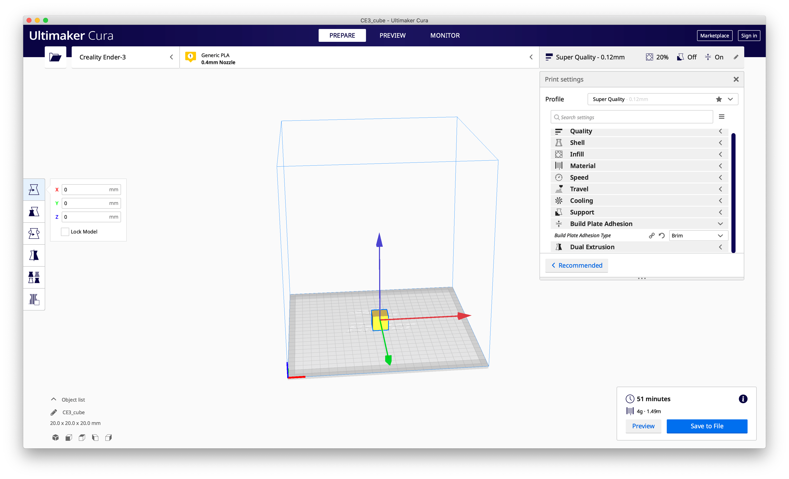

WEEK 3
Getting started with 3d Printing!

In this assignment, I assembled and 3d-printed standard shapes in different print settings in Ultimaker Cura. You can access the final .3dm file here.
1. Assembling The 3D Printer
After receiving my package very late in the week. I started assembling the 3D printer following the provided manual and this very helpful youtube tutorial>. It took some time to level the printer since my floor was not completely flat.
The only mistake I made during the assembly is the bed-leveling process. I unfortunately didn't lower the bed on all four corners before moving the extruder around and resulted to a deep scratch on the print bed. However, the extruder still seems to work fine.
2. Creating The Shapes
I started by creating the basic shapes of a 2cm cube, 2cm-diameter tube, and a 2cm cylinder in Rhino and exported them as separate .stl files.
To ensure a faster print time, I halved the height of the cylinders to 10mm instead since there isn't a specified height.
3. Converting to GCode
With the shapes exported, I then imported them into Ultimaker Cura to adjust my print settings.
Upon slicing, the gcode is then saved to an SD card which is transfered to the printer for printing.
3. Checking The Results
Cubes
The image below shows the first 3 tasks of printing 2cm cubes at low (left), standard (mid), and high quality (right) which took about 16 minutes, 30 minutes, and 53 minutes respectively.
As you can see from the prints, especially on the brims, the lines get thinner and finer as you move towards the higher quality print. However, the difference between standard and super quality is as distinguishable as the difference between low and standard. The resulting caliper measurements in width x length x height are 20.16mm x 19.80mm x 19.63mm, 19.89mm x 19.83mm x 19.68mm, and 19.99mm x 20.01mm x 19.57mm respectively. In terms of the length and width, this suggests that potentially an improvement of print accuracy as the print quality is increased. However, for the height, some calibration may be done on cura to improve its accuracy.
Tubes
I initially tried to print the tubes by only creating an extruded curve on Rhino. This didn't work since Cura automatically capped the design on slicing and the print became a flat disk instead.
To correct this, I redesigned the tube on Rhino with a 0.1cm offset and exported that to .stl.
Cylinders
The cylinder with the 0.1cm tolerance (left) printed in 23 minutes with the resulting dimensions in diameter x height: 19.90mm x 9.84mm. On the other hand, the cylinder with 0.005cm tolerance (right) printed in 15 minutes with the dimensions 19.98mm x 9.70mm.
Cube with a Hole
Unfortunately, I wasn't able to get to this task due to time constraints.